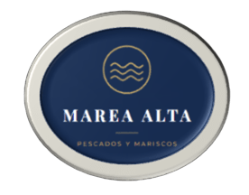

DIW&CO Restaurantes reúne cinco propuestas gastronómicas con identidad propia.
Asador y cortes seleccionados a la brasa de encina · Gijón
Cocina mediterránea, arroces y producto de huerta

Pescados de lonja y mariscos del Cantábrico
Cocina tradicional y bodega de autor
Gastronomía japonesa y robata al carbón